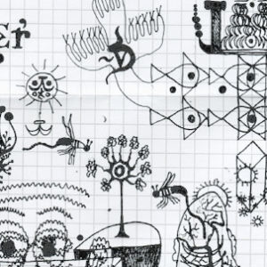
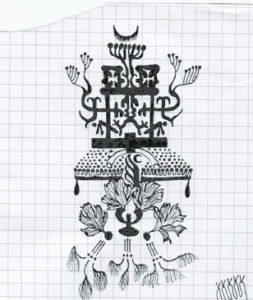
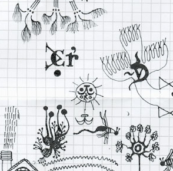
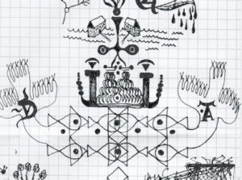
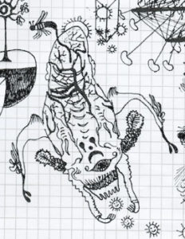
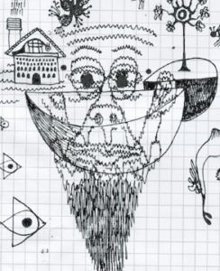
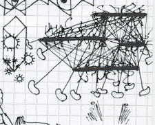
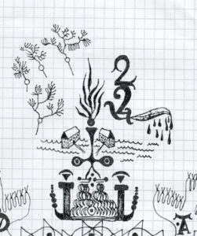

{#17} Scienza Guerra e Società
«We don’t know what science is cooking up, 25 year-olds in the laboratories, and at the same time often scientists are not exposed to the bigger questions of ethics, history and politics. They are in their labs, doing their stuff, and they don’t really understand the implications of it.»
Jeff Halper, intervento a SGS (via scienceground.it)

Care lettrici di questa newsletter sporadica,
il 27 novembre 2020 Mohsen Fakhrizadeh, tra i più importanti scienziati nucleari iraniani, è stato ucciso in un agguato alla periferia di Teheran. La dinamica dell’omicidio non è completamente chiara, ma l’ipotesi più verosimile è che a ucciderlo sia stata una mitragliatrice montata su un pick-up e guidata da un sistema di intelligenza artificiale. L’ipotesi è avvalorata dalle dichiarazioni delle autorità iraniane e da testimoni oculari: nessun commando armato è stato visto nei pressi dell’attentato, e il pick-up è esploso alla fine della sparatoria, forse per non lasciare in mani iraniane le apparecchiature ad alta tecnologia usate per portare a termine l’operazione.
Almeno due delle tre famose leggi della robotica (Non danneggiare un essere umano, Non recare danno a te stesso) – ideate dallo scrittore di fantascienza Isaac Asimov – sono state visibilmente disattese, ma naturalmente compito primario dei soldati-robot, come dei loro omologhi umani, è proprio quello di danneggiare altri esseri umani…
A partire da queste considerazioni vi proponiamo alcuni percorsi su un tema che ci sta molto a cuore, e su cui stiamo facendo un percorso di indagine: l’impiego dei risultati delle ricerche scientifiche a scopi militari.
In questa mail presentiamo il ciclo di seminari Scienza Guerra e Società, articolato in quattro incontri (più uno):
- Industria militare, società, sviluppo: quando andare in guerra porta innovazione, con Luigi Tomassini e Mauro Lubrano;
- Quale ricerca in quale paese: sistemi a confronto, con Angelo Baracca e Jeff Halper;
- (extra) Emissioni zero, il bluff del nucleare, con Angelo Baracca;
- Da cosa nasce il dual use, con Alessandro Pascolini e Mattia Galeotti
- Che cosa c’entra l’ecologia, con Davide Faranda e Paolo Missiroli.
Potete trovare le presentazioni dei contenuti e le letture consigliate sul nostro sito, alla pagina https://scienceground.it/scienza-guerra-societa-bibliografia/. Gli audio integrali si possono ascoltare qui e cliccando al link tondo in fondo alla pagina.
I testi sono di Luca Guzzetti, i disegni di Alberto Motolese.

Scienza Guerra e Società
Il ciclo d’incontri intitolato “Scienza Guerra Società” è stato concepito per iniziare una riflessione sui rapporti, sempre più stretti, tra ricerca tecno-scientifica e guerra nelle società contemporanee. Lo stimolo iniziale è giunto dalla partecipazione dell’Istituto Italiano di Tecnologia (IIT) di Genova a un convegno della NATO che si sarebbe dovuto tenere nel novembre 2019: alcuni ricercatori e ricercatrici dell’Istituto si sono domandate cosa c’entrasse il loro centro di ricerca con l’alleanza militare occidentale. Forse il filo conduttore più marcato della serie di conferenze, seminari e incontri di ricerca è stato il concetto di ricerca duale.

In effetti, nel mondo contemporaneo è difficile distinguere in maniera rigorosa la ricerca con finalità esclusivamente civili da quella con finalità anche militari. Sin dagli anni Sessanta del secolo scorso un centro di ricerca della Difesa statunitense come ARPA, poi DARPA (Defense Advanced Research Projects Agency), ha finanziato ogni genere di progetto, tra cui per esempio quello dell’antenato di Internet – Arpanet. Se possono mantenere il segreto, i militari sono ben contenti, ma per loro la cosa più importante è disporre di tecnologie più avanzate di quelle dei “nemici”. A tal fine possono finanziare direttamente la ricerca in settori genericamente promettenti dal punto di vista militare, organizzare concorsi nei quali prototipi di congegni interessanti vengono messi in competizione tra loro, o anche acquisire brevetti commerciali già esistenti, adattandoli alle proprie esigenze. Per tornare all’IIT, tutti e quattro i dominii di ricerca dell’Istituto – Robotics, Nanomaterials, Lifetech and Computational Sciences – hanno possibili ricadute di interesse militare.

Nel primo incontro del ciclo, il professor Luigi Tomassini e il ricercatore Mauro Lubrano hanno analizzato il legame tra ricerca scientifica e ricerca militare da un punto di vista storico, guardando alle trasformazioni di questo rapporto nel passaggio ai grandi conflitti mondiali del Novecento e, più recentemente, nello sviluppo del terrorismo e nei conflitti innescati da attori non statali, quali, ad esempio, Brigate Rosse, IRA, Hezbollah.

Avendo constatato che la scienza non dipende inevitabilmente dalla necessità di sviluppo militare, il secondo incontro ha messo a confronto due opposti paradigmi di sviluppo, Israele e Cuba. Jeff Halper – antropologo americano e fondatore della campagna per One Democratic State, che propone di creare uno stato senza discriminazioni razziste, religiose o linguistiche in tutta la Palestina storica – ha spiegato come Israele svolga un ruolo centrale nell’industria militare a livello globale. Il sistema di ricerca israeliano è perfettamente integrato tra civile e militare, con anche passaggi costanti di personale e dirigenti tra aziende pubbliche e private da un lato e l’esercito dall’altro: potremmo dire che l’intero sistema della ricerca israeliano è per sua natura duale. I principali produttori di armi sono le grandi potenze come Stati uniti, Russia e Cina, ma Israele riesce a vendere in tutto il mondo – anche e soprattutto agli Stati Uniti – apparecchiature ad alta tecnologia per sistemi d’arma di ogni genere. Gli stretti rapporti commerciali – soprattutto in campo militare – di Israele con alcuni paesi del Golfo persico, come Emirati Arabi Uniti e Bahrein, hanno portato recentemente alla normalizzazione dei loro rapporti diplomatici. In attesa di un accordo simile con l’Arabia saudita, maggiore acquirente di armamenti al mondo, armi che utilizza da ormai molti anni in Yemen e che accumula in funzione anti-iraniana.

L’esempio di Israele è agli antipodi dell’esperienza cubana: fin dal primo anno dopo la Rivoluzione, nell’isola si è largamente investito in una ricerca scientifica a beneficio delle cittadine, portando Cuba, nonostante il permanere del bloqueo economico imposto dagli Stati Uniti, ad essere oggi all’avanguardia nel campo biotecnologico, non ultima anche nell’attuale sfida per un vaccino contro Sars-Cov-2. Angelo Baracca, fisico e attivista per la pace, e Rosella Franconi, biotecnologa ricercatrice presso l’ENEA di Roma, hanno raccontato questa storia nel loro libro.
Lo stesso Angelo Baracca ha affrontato con noi anche il tema del Nucleare, che ha rappresentato nel Novecento il più importante caso di tecnologia duale – militare ed energetica – e che oggi sta tornando in voga come proposta di fonte di energia carbon-free.
La sostenibilità ambientale, cruciale per il futuro dell’umanità, è un altro tema che ha attraversato diversi incontri. La guerra è infatti chiaramente insostenibile da un punto vista ambientale, sia per le cause e le modalità con cui viene realizzata, oltre che evidentemente per le conseguenze immediate sulle persone e i territori in cui avviene. La ricerca scientifica e tecnologica può essere insostenibile non solo quando collabora alla produzione di ordigni di guerra, ma anche quando genera diseguaglianze nella distribuzione uso di risorse, ricchezze e conoscenze. In questo senso, particolarmente inquietanti sono i progetti di Geo-ingegneria di cui ha parlato il filosofo Paolo Missiroli. Si tratta di progetti visionari e prometeici – di ispirazione e origine militare – per la creazione di nuove tecnologie che risolvano i principali problemi ambientali: scudi solari per combattere il surriscaldamento globale, o pompe negli oceani che aspirino la CO2 per poi spararla nello spazio… tutto il contrario di quelle tecnologie “conviviali” che Ivan Illich auspicava quali alternativa alle “grandi macchine” come le centrali nucleari.

Hanno collaborato al ciclo di incontri “Scienza Guerra e Società”: Fondazione Palazzo Ducale di Genova, Dipartimento di Scienze della Formazione dell’Università di Genova, Associazione dottorandi e dottori di ricerca in Italia (ADI), Piccola comunità scientifica ExTemporanea, LaborPace Caritas Genova, Fridays For Future Genova.

Questa newsletter è un bene pubblico gestito da eXtemporanea. Se come noi sei ugualmente contraria alla guerra e a visioni troppo ingenue della pace, aiutaci ad approfondire questi problemi e a creare una comunità più ampia. Puoi scriverci personalmente all’indirizzo dnuorgecneics@gmail.com, o puoi lasciare un commento sul blog scienceground.it, oppure puoi semplicemente rilanciare questo contenuto dove credi meglio.
Peace!
eXtemporanea